Culture française
Géographie 🌐
Région française: Provence –Alpes - Côte d’Azur
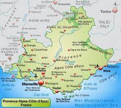
La Provence-Alpes-Côte d’Azur se trouve dans le sud-est de la France, entre la mer Méditerranée et les Alpes. Tout d’abord, cette région se distingue par la diversité de ses paysages et par son patrimoine historique. À Avignon, on peut visiter le célèbre Palais des Papes, tandis qu’à Orange, on découvre un remarquable théâtre antique romain. Ensuite, la ville d’Arles est connue pour ses monuments romains et pour les Rencontres de la photographie, un événement culturel important. De plus, les champs de lavande de Provence attirent de nombreux visiteurs, surtout en été. À Cannes, le célèbre Festival de Cannes réunit chaque année des professionnels du cinéma venus du monde entier. Par ailleurs, le parc national des Calanques permet de faire des randonnées et d’admirer la Méditerranée. La région est aussi liée au peintre Paul Cézanne, né à Aix-en-Provence. Enfin, les marchés provençaux, les santons et la gastronomie représentent des traditions importantes. À mon avis, cette région est particulièrement intéressante, car elle réunit nature, histoire et culture. Ainsi, elle offre une expérience très variée aux visiteurs.
Région française d'outre-mer - Martinique
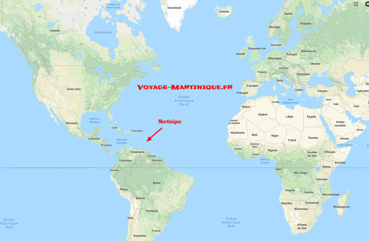
La Martinique est une région française d’outre-mer située dans les Caraïbes. Tout d’abord, cette île est connue pour ses paysages tropicaux, mais aussi pour son histoire et sa culture créole. Fort-de-France est la principale ville et représente un important centre culturel. Au nord, la Montagne Pelée, haute de 1 397 mètres, domine le paysage. En 1902, son éruption a détruit Saint-Pierre et provoqué une catastrophe humaine majeure. Aujourd’hui, Saint-Pierre, souvent appelée la « Pompéi des Caraïbes », permet de découvrir les ruines et les lieux liés à cette tragédie. De plus, les visiteurs peuvent faire l’ascension de la Montagne Pelée ou découvrir la distillerie Depaz. La Martinique possède également une culture créole riche, visible dans la musique, les traditions et le carnaval. Par ailleurs, le 22 mai, l’île commémore l’abolition de l’esclavage de 1848. Enfin, une personnalité essentielle est Aimé Césaire, écrivain et homme politique né à Basse-Pointe. À mon avis, la Martinique est particulièrement intéressante, car elle permet de comprendre comment histoire, mémoire et culture peuvent former une identité originale.
La Guyane
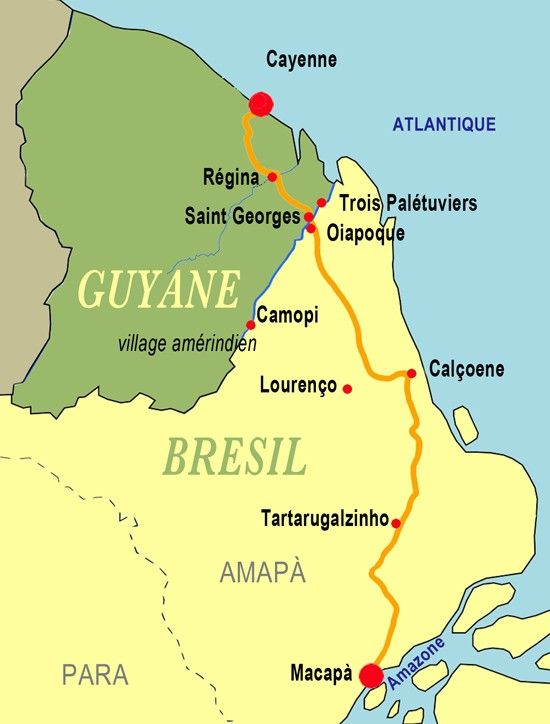
La Guyane est un territoire français situé au nord-est de l’Amérique du Sud, entre le Brésil et le Suriname. Tout d’abord, sa capitale, Cayenne, est connue pour sa diversité culturelle et son patrimoine. La Guyane possède également une immense forêt tropicale qui abrite une biodiversité exceptionnelle. Ensuite, à Kourou, les visiteurs peuvent découvrir le Centre spatial guyanais, un lieu important pour les activités spatiales européennes. De plus, la société guyanaise réunit plusieurs communautés, langues et traditions, ce qui lui donne une identité particulièrement riche. Le Carnaval de Guyane constitue ainsi un événement culturel majeur. Les touloulous, avec leurs costumes et leurs masques, représentent une tradition emblématique de cette période. Par ailleurs, la Guyane est liée à une personnalité historique importante : Félix Éboué, né à Cayenne en 1884. En 1940, pendant la Seconde Guerre mondiale, il choisit de soutenir la France libre et contribue au ralliement du Tchad. Aujourd’hui, sa maison de jeunesse constitue un lieu de mémoire. À mon avis, la Guyane est fascinante, car elle montre que la culture française peut prendre des formes très différentes selon les territoires. Ainsi, elle représente une francophonie véritablement multiculturelle.
Le Canada - pays francophone
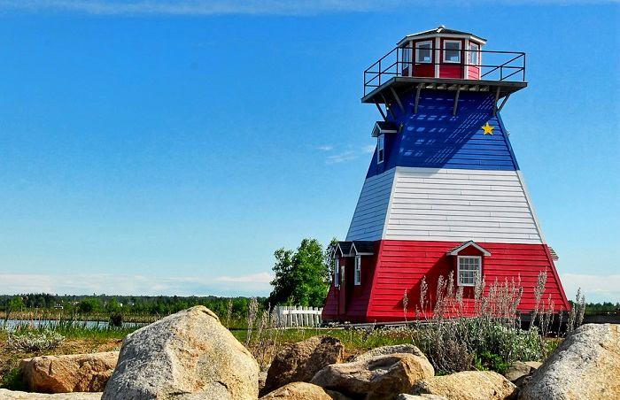
Le Canada est un immense pays d’Amérique du Nord où le français occupe une place importante aux côtés de l’anglais. Tout d’abord, le Québec constitue le principal territoire francophone du pays, avec Québec comme capitale et Montréal comme plus grande ville. À Montréal, les visiteurs peuvent découvrir le Vieux-Montréal, le mont Royal et le Quartier des spectacles. Ensuite, la ville accueille les Francos de Montréal, un important festival consacré à la musique francophone. En 2026, sa 37e édition propose plus de 150 concerts et événements, ce qui montre la vitalité de la culture française au Canada. De plus, le Nouveau-Brunswick est la seule province officiellement bilingue du pays. La francophonie canadienne possède aussi ses propres artistes et traditions. Parmi les personnalités importantes, on peut citer Félix Leclerc, grande figure de la chanson québécoise. Par ailleurs, la diversité culturelle du Canada permet à la langue française de se développer dans un contexte différent de celui de la France. À mon avis, le Canada est un exemple intéressant de la vitalité de la francophonie, car le français y possède une identité culturelle particulière. Ainsi, découvrir le Canada permet de mieux comprendre la diversité du monde francophone.
Marseille - ville de France
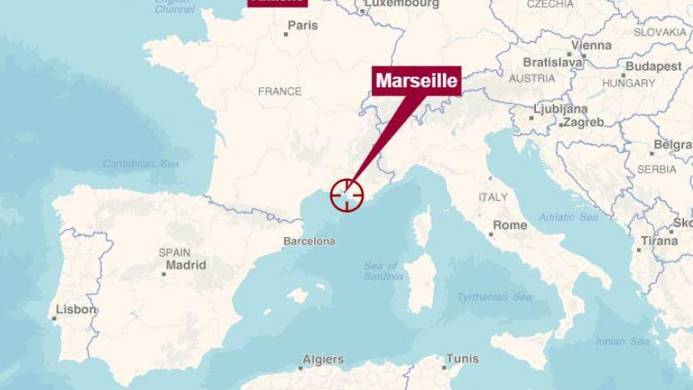
Marseille se trouve dans le sud de la France, au bord de la mer Méditerranée. Tout d’abord, c’est une ville très ancienne, fondée il y a plus de 2 600 ans, qui possède un patrimoine historique remarquable. Son monument le plus célèbre est Notre-Dame de la Garde, construite sur une colline qui domine la ville et la mer. La statue dorée de la Vierge est affectueusement appelée « la Bonne Mère ». Ensuite, le Vieux-Port constitue un lieu incontournable pour découvrir l’atmosphère de Marseille. De plus, on peut prendre un bateau pour visiter le château d’If, construit sur ordre de François Ier en 1516 et transformé en prison d’État à partir de 1580. Ce monument est devenu célèbre grâce au roman Le Comte de Monte-Cristo d’Alexandre Dumas et à son personnage Edmond Dantès. Par ailleurs, le parc national des Calanques permet de faire des randonnées ou des excursions en bateau entre Marseille et Cassis. À mon avis, Marseille est particulièrement intéressante, car elle associe histoire, littérature, nature et ouverture sur la Méditerranée. Ainsi, elle représente une ville française à la fois historique et très vivante.
Eveniments historiques ⏳
La Révolution française
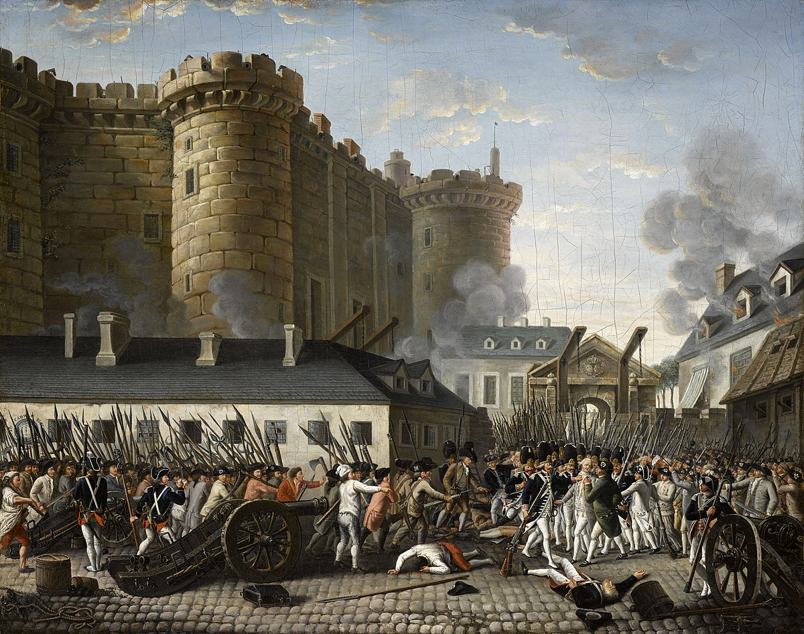
La Révolution française est l’un des événements les plus importants de l’histoire de France. Elle commence en 1789, dans un contexte de crise politique, économique et sociale. Tout d’abord, le 14 juillet 1789, le peuple de Paris prend la Bastille, une prison royale devenue le symbole de l’Ancien Régime. Ensuite, pendant l’été, l’Assemblée constituante adopte la Déclaration des droits de l’homme et du citoyen, le 26 août 1789. Ce texte affirme notamment la liberté et l’égalité devant la loi. De plus, la Révolution met progressivement fin aux privilèges de la noblesse et du clergé. En 1791, la France adopte sa première Constitution et devient une monarchie constitutionnelle. Cependant, la période révolutionnaire devient de plus en plus violente et Louis XVI est exécuté en 1793. Par ailleurs, la devise « Liberté, Égalité, Fraternité », associée plus tard à la République française, rappelle certaines valeurs issues de cette période. À mon avis, la Révolution française reste essentielle, car elle a profondément transformé la société et les institutions françaises. Ainsi, son héritage dépasse largement les frontières de la France. S'informer plus
Le sacre de Napoléon Ier

Le sacre de Napoléon Ier constitue un événement important de l’histoire de France, car il marque la naissance symbolique du Premier Empire. Tout d’abord, Napoléon devient officiellement empereur des Français le 18 mai 1804. Quelques mois plus tard, le 2 décembre 1804, son sacre a lieu dans la cathédrale Notre-Dame de Paris, en présence du pape Pie VII. Ensuite, son épouse Joséphine est également couronnée impératrice. La cérémonie est particulièrement spectaculaire et réunit de nombreux dignitaires et invités. De plus, Napoléon souhaite montrer qu’il appartient à la tradition des grandes dynasties européennes, notamment à celle de Charlemagne. Un autre élément célèbre est le tableau monumental de Jacques-Louis David représentant la cérémonie. Cette œuvre se trouve aujourd’hui au musée du Louvre et permet de découvrir de nombreux personnages historiques. Par ailleurs, Napoléon prête un serment constitutionnel et promet notamment de respecter certains acquis de la Révolution. À mon avis, cet événement est intéressant parce qu’il montre le changement politique de la France après la Révolution. Ainsi, le sacre représente à la fois une rupture avec la République et une continuité avec certaines transformations révolutionnaires.
Verdun – un symbole de la Première Guerre mondiale
La Première Guerre mondiale, qui se déroule de 1914 à 1918, représente une période particulièrement difficile pour la France et pour l’Europe. Parmi les événements les plus connus, la bataille de Verdun occupe une place importante. Elle commence le 21 février 1916 et devient l’une des batailles les plus longues et les plus violentes du conflit. Tout d’abord, les soldats français et allemands s’affrontent pendant plusieurs mois dans des conditions extrêmement difficiles. Ensuite, les combats provoquent des centaines de milliers de morts, de blessés et de prisonniers. Le fort de Douaumont et le fort de Vaux deviennent des lieux importants de cette bataille. De plus, Verdun devient progressivement un symbole de la résistance française. Après la guerre, la région conserve de nombreux lieux de mémoire, notamment des cimetières militaires et la nécropole de Douaumont. Par ailleurs, la ville de Verdun reçoit la Légion d’honneur et la Croix de Guerre avec palmes en 1916. À mon avis, l’importance de Verdun ne vient pas seulement de l’aspect militaire, mais aussi de sa valeur mémorielle. Ainsi, ce lieu rappelle aujourd’hui les conséquences humaines de la guerre et l’importance de préserver la paix.
L’appel du 18 juin 1940 – un moment important de la Résistance française
L’appel du 18 juin 1940 est un événement important de l’histoire contemporaine de la France. Il se déroule pendant la Seconde Guerre mondiale, après la défaite militaire française face à l’Allemagne. Tout d’abord, le général Charles de Gaulle se trouve à Londres et refuse d’accepter la défaite définitive de la France. Le 18 juin, il s’adresse aux Français à la radio britannique BBC et les encourage à poursuivre le combat. Ensuite, son appel devient progressivement un symbole de la France libre et de la Résistance. De Gaulle affirme que la guerre n’est pas terminée et qu’il existe encore des possibilités pour continuer la lutte. De plus, cet appel contribue à construire son image de chef de la France libre. Même si peu de Français l’entendent directement le 18 juin, son importance historique devient considérable par la suite. Par ailleurs, les forces de la France libre participent ensuite aux combats aux côtés des Alliés. À mon avis, cet événement est particulièrement important parce qu’il représente le courage et l’espoir dans une période très difficile. Ainsi, l’appel du 18 juin reste associé à la volonté de continuer à défendre la France malgré la défaite.
Le débarquement de Normandie – 1944

Le débarquement de Normandie, qui a lieu le 6 juin 1944, est l’un des événements les plus importants de la Seconde Guerre mondiale en France. Cette opération militaire, appelée « Overlord », est organisée par les Alliés afin d’ouvrir un nouveau front en Europe occidentale. Tout d’abord, les troupes alliées débarquent sur cinq plages normandes : Utah, Omaha, Gold, Juno et Sword. Ensuite, environ 156 000 hommes débarquent en Normandie le premier jour. Les combats sont particulièrement difficiles à Omaha Beach, où les pertes sont importantes. De plus, les Alliés construisent des ports artificiels, notamment à Arromanches, afin de faciliter le transport du matériel et des soldats. La participation française est également symbolisée par le commando Kieffer, qui débarque à Sword Beach. Par ailleurs, le débarquement permet ensuite aux Alliés de poursuivre la bataille de Normandie et de progresser vers la libération de la France. Aujourd’hui, les plages, les cimetières et les musées de Normandie sont des lieux de mémoire. À mon avis, cet événement est essentiel, car il rappelle le prix de la liberté et l’importance de la coopération entre les peuples. Ainsi, la Normandie reste un symbole majeur de mémoire et de paix.
Les systèmes français 👩🎓
Les symboles de la République française
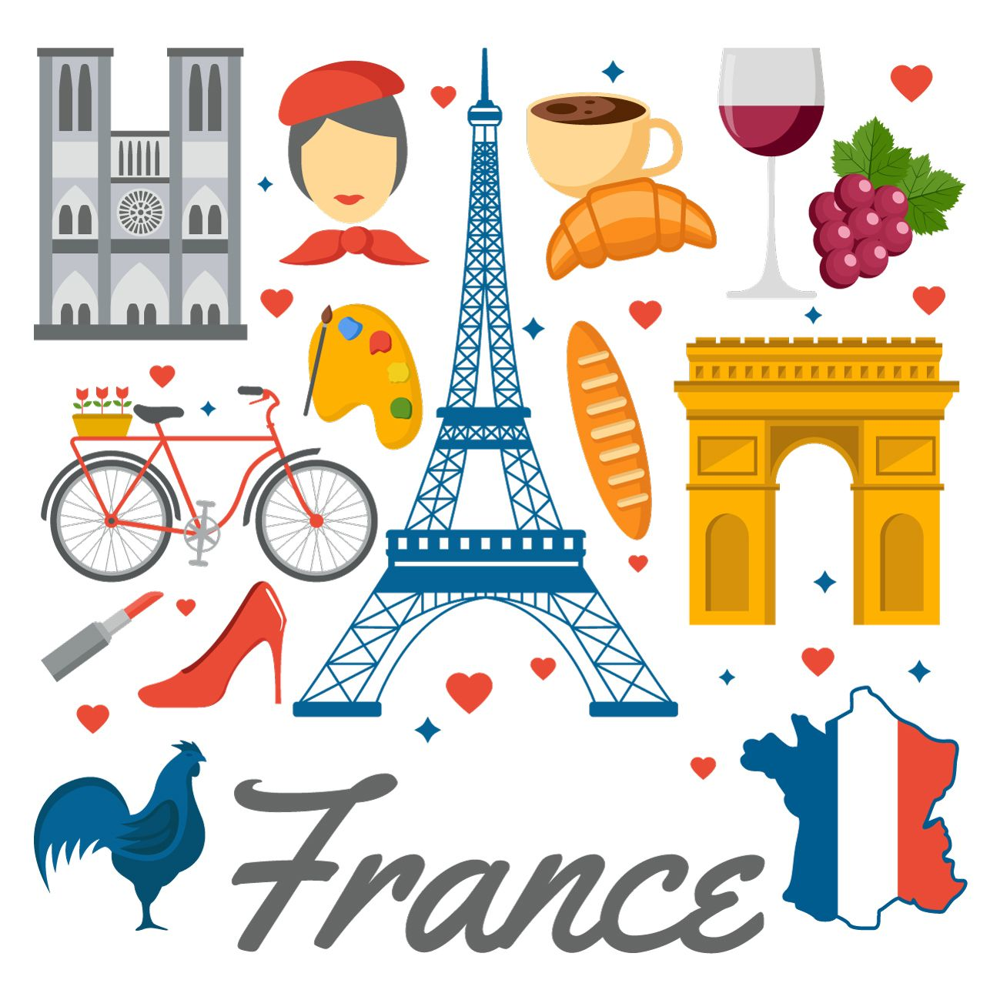
La France possède plusieurs symboles qui représentent son histoire, ses valeurs et son identité nationale. Tout d’abord, le drapeau tricolore, bleu, blanc et rouge, est l’emblème national de la République. Ses trois couleurs sont associées à Paris et à la monarchie pendant la Révolution française. Ensuite, l’hymne national est La Marseillaise, écrit par Rouget de Lisle en 1792. De plus, la devise officielle est « Liberté, Égalité, Fraternité », trois valeurs fondamentales de la République. Marianne représente également la République sous la forme d’une femme portant traditionnellement un bonnet phrygien. On retrouve son buste dans de nombreuses mairies françaises. Par ailleurs, le coq gaulois est un symbole historique souvent associé à la France, notamment dans le domaine sportif. Le 14 juillet, fête nationale française, rappelle la Révolution française et constitue également un symbole important. Enfin, le sceau de la République et le faisceau de licteur font partie des symboles officiels. À mon avis, ces symboles sont importants, car ils permettent aux citoyens de mieux comprendre l’histoire et les valeurs de leur pays. Ainsi, ils contribuent à renforcer l’identité républicaine. Lire plus au sujet
Les institutions politiques de la République Française
La France est une République indivisible, laïque, démocratique et sociale, organisée selon la Constitution de la Ve République de 1958. Tout d’abord, le Président de la République est le chef de l’État. Depuis 1962, il est élu au suffrage universel direct et son mandat dure cinq ans. Il nomme le Premier ministre et joue un rôle important dans la politique nationale. Ensuite, le Gouvernement est dirigé par le Premier ministre et comprend les ministres. Il conduit la politique de la Nation et assure l’application des lois. De plus, le Parlement exerce le pouvoir législatif. Il est composé de deux chambres : l’Assemblée nationale et le Sénat. Les députés sont élus au suffrage direct, tandis que les sénateurs sont élus au suffrage indirect. Par ailleurs, le Conseil constitutionnel contrôle notamment la conformité des lois à la Constitution et la régularité de certaines élections. Enfin, les institutions françaises reposent sur plusieurs principes, comme la démocratie, la séparation des pouvoirs et la souveraineté nationale. À mon avis, il est important de connaître ces institutions, car elles permettent de comprendre comment fonctionne la République. Ainsi, elles jouent un rôle essentiel dans la vie citoyenne.
Le système éducatif français

Le système éducatif français joue un rôle important dans la formation des jeunes et dans la société. Tout d’abord, l’instruction est obligatoire en France de 3 à 16 ans. L’école maternelle accueille généralement les enfants à partir de trois ans, puis ils entrent à l’école élémentaire vers six ans. Ensuite, les élèves poursuivent leur scolarité au collège, qui comprend quatre niveaux : la sixième, la cinquième, la quatrième et la troisième. Après le collège, ils peuvent choisir entre différentes formes de lycée, notamment le lycée général, technologique ou professionnel. De plus, le lycée prépare les élèves au baccalauréat et à la poursuite des études supérieures. L’enseignement public français repose également sur les principes de gratuité, de laïcité et d’égalité. Par ailleurs, l’école transmet non seulement des connaissances, mais aussi les valeurs de la République, comme la liberté, l’égalité et la fraternité. Enfin, les élèves peuvent ensuite continuer leurs études dans les universités ou dans d’autres établissements d’enseignement supérieur. À mon avis, l’éducation est essentielle, car elle donne aux jeunes des connaissances et les aide à construire leur avenir. Ainsi, l’école joue un rôle important dans la société française.
Le système de transport en France

La France possède un réseau de transport très développé qui facilite les déplacements des habitants et des visiteurs. Tout d’abord, le transport ferroviaire occupe une place importante dans la vie quotidienne. Les trains à grande vitesse TGV permettent de relier rapidement Paris à de nombreuses grandes villes françaises. Ensuite, les grandes villes disposent de différents transports publics, comme le métro, le tramway et les autobus. Paris possède notamment un vaste réseau de métro qui permet de se déplacer facilement dans la capitale. De plus, les transports collectifs jouent un rôle important pour réduire l’utilisation de la voiture et limiter les problèmes de circulation. Par ailleurs, les transports permettent également aux touristes de découvrir différentes régions françaises, depuis les grandes villes jusqu’aux zones rurales et touristiques. Les gares constituent ainsi des lieux essentiels pour les déplacements professionnels et personnels. Enfin, le développement de transports plus propres représente un enjeu important pour l’avenir, notamment dans les grandes villes. À mon avis, un réseau de transport efficace est essentiel, car il facilite la mobilité, les études, le travail et le tourisme. Ainsi, les transports participent directement à la vie économique et sociale du pays.
Le système de santé français

Le système de santé français constitue un élément important de la vie sociale en France. Tout d’abord, il repose notamment sur la Sécurité sociale, créée en 1945, qui vise à protéger les personnes contre différents risques de la vie. L’Assurance Maladie constitue l’une de ses principales composantes et concerne la prise en charge des dépenses de santé. Ensuite, les patients peuvent consulter différents professionnels, comme les médecins, les dentistes, les pharmaciens ou les kinésithérapeutes. De plus, l’Assurance Maladie participe au remboursement de nombreux soins et contribue à l’accès aux soins. Elle joue également un rôle dans la prévention et dans la régulation du système de santé. Par ailleurs, le système français comprend des hôpitaux publics et des établissements privés. Les organismes de l’Assurance Maladie sont organisés à différents niveaux et disposent d’un réseau présent sur l’ensemble du territoire. Enfin, le financement et l’organisation du système représentent des défis importants, notamment à cause du vieillissement de la population et de l’augmentation des maladies chroniques. À mon avis, un système de santé accessible est essentiel, car il contribue à protéger la population et à réduire les inégalités. Ainsi, la santé représente une responsabilité individuelle, mais aussi collective.
Fêtes et traditions 🎉
Le 14 juillet - Fête nationale
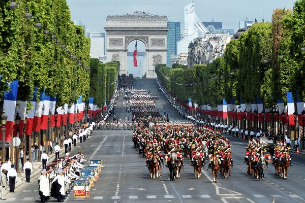
Le 14 juillet, c'est aujourd'hui dans l'esprit des Français le défilé
militaire le plus solennel, sur les Champs Elysées, en présence du chef de l'État. C'est aussi
une
fête populaire avec ses bals, ponctuée de feux d'artifice dans toutes les communes de France.
Mais
le 14 juillet, c'est surtout la fête républicaine, le symbole de la fin de la monarchie absolue,
de
la naissance de la Nation souveraine puis bientôt de celle de la République. La fête nationale
est
un moment où les citoyens peuvent ressentir leur appartenance à la nation républicaine parce que
cette fête trouve sa source dans l'histoire de la naissance de la République. Le 5 mai 1789, le
Roi
convoque les États généraux pour recueillir leurs doléances; mais l'assemblée du Tiers, qui
représente la bourgeoisie, se proclame Assemblée nationale constituante. Les députés font, le 20
juin 1789, le serment du Jeu de Paume de "ne jamais se séparer jusqu'à ce que la Constitution
fût
établie". Cette contestation des députés du Tiers trouve un écho dans l'opinion publique.
Le peuple
de Paris se soulève et décide de marcher sur la Bastille, prison d'État qui symbolise
l'absolutisme
de l'Ancien Régime. Le 14 juillet 1789, prend tout de suite une portée historique symbolique;
c'est
la preuve que le pouvoir du Roi n'est plus absolu et que ce pouvoir doit être limité par une
séparation des pouvoirs. Le 16 juillet, le Roi reconnaît la cocarde tricolore: la révolution est
faite. La prise de la Bastille symbolise pour tous les Français la liberté, la lutte contre
toutes
les formes d'oppression. Ce jour fut déclaré "Fête Nationale" le 31 janvier 1879.
L'Épiphanie - une fête réligieuse
L’Épiphanie est une fête traditionnelle très connue en France et elle occupe une place importante au début du mois de janvier. Tout d’abord, elle est célébrée le 6 janvier et possède une origine chrétienne. Elle rappelle traditionnellement la visite des Rois mages à Jésus. Aujourd’hui, cette fête est aussi devenue une tradition familiale et gastronomique. Ensuite, les Français se réunissent souvent autour d’une galette des rois. Dans le nord de la France, il s’agit généralement d’une galette à la frangipane, tandis que d’autres régions possèdent leurs propres spécialités. De plus, une petite figurine appelée « fève » est cachée dans la galette. La personne qui la trouve devient le roi ou la reine et porte généralement une couronne en papier. Par ailleurs, cette tradition permet aux familles et aux amis de se réunir après les fêtes de fin d’année. Elle représente également une occasion de transmettre une coutume aux jeunes générations. À mon avis, l’Épiphanie est intéressante parce qu’elle associe religion, gastronomie, famille et tradition. Ainsi, cette fête montre comment une tradition ancienne peut continuer à vivre dans la société actuelle. En conclusion, l'Épiphanie se présente comme une fête riche en significations, alliant la dimension spirituelle à la convivialité.
La Fête de Toussaint - une fête réligieuse
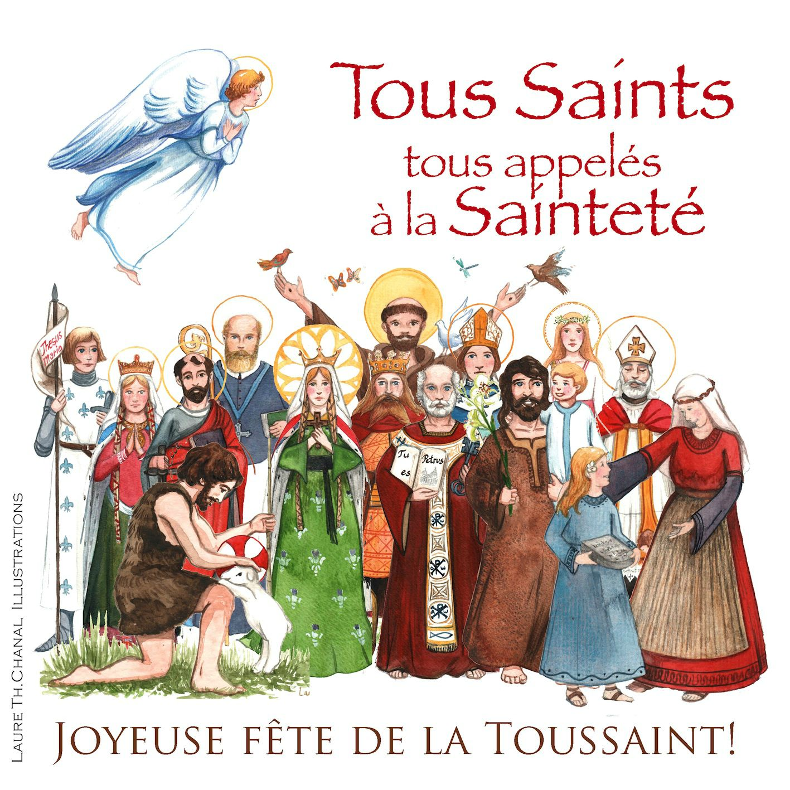
La Toussaint est une fête religieuse et traditionnelle célébrée en France chaque année au début
du mois de novembre. Tout d’abord, elle a lieu le 1er novembre et, dans la tradition chrétienne,
elle est consacrée à tous les saints. Cette fête possède donc une origine religieuse, mais elle
a également une dimension familiale et culturelle.
Ensuite, la Toussaint est associée à la mémoire des personnes décédées. Le 2 novembre est
traditionnellement consacré aux défunts, même si, dans la pratique, de nombreuses familles
rendent visite aux cimetières dès le 1er novembre. De plus, elles déposent souvent des fleurs
sur les tombes et entretiennent les lieux de mémoire. Les chrysanthèmes sont particulièrement
associés à cette période.
Par ailleurs, la Toussaint correspond également à une période de vacances scolaires en France.
Les familles peuvent donc profiter de cette période pour se retrouver et pour rendre hommage à
leurs proches. Cette fête permet ainsi de maintenir un lien entre les générations et de
respecter la mémoire familiale. À mon avis, la Toussaint est importante parce qu’elle rappelle
la valeur de la mémoire et du respect des personnes disparues. Ainsi, elle associe religion,
famille, tradition et souvenir.
La Sainte Catherine
La Sainte Catherine se célèbre tous les ans le 25 novembre. Ce jour là, les catherinettes
(célibataires de plus de 25 ans) portent un chapeau jaune ou organisent une fête et les petites
filles s’offrent des cartes de Sainte Catherine. Selon la tradition, le 25 novembre est
l’occasion
de célèbrer les fillettes mais aussi les
catherinettes (les femmes de 25 ans qui ne sont pas encore mariées). Les fillettes s’offrent des
cartes de Sainte Catherine et les catherinettes organisent une petite fête p
ur trouver leur futur mari.
Si cette fête reste populaire dans le Nord et l’est de la France, les catherinettes ne sont plus
beaucoup célèbrées en France. Et pour cause, plus de la moitié des françaises ne sont pas
célibataires et vivent en couple depuis de nombreuses années.
Pour reconnaître une catherinette, la tradition veut qu’elle porte toute la journée un chapeau
extravagant jaune et vert. Le vert pour l’espoir et le jaune pour la sagesse. C’est pourquoi les
maisons de couture, certains magasins de mode continuent de proposer
Le Festival de Cannes
Le Festival de Cannes est l’un des événements cinématographiques les plus connus au monde. Tout d’abord, il se déroule chaque année à Cannes, sur la Côte d’Azur, et réunit des réalisateurs, des acteurs, des producteurs et des journalistes venus de nombreux pays. Il constitue donc un événement important pour le cinéma français et international. Ensuite, les professionnels et le public peuvent découvrir de nombreux films provenant de différentes régions du monde. De plus, les œuvres présentées sont évaluées par un jury international dans la compétition officielle. La récompense la plus célèbre du festival est la Palme d’or, qui distingue un film de la compétition. Par ailleurs, le Festival de Cannes contribue fortement à l’image culturelle de la France. Il attire également de nombreux visiteurs et participe au développement touristique de la ville. Le célèbre tapis rouge est devenu un symbole de l’événement et de la culture cinématographique. Enfin, le festival permet aux artistes de se rencontrer, de présenter leurs œuvres et de développer des échanges internationaux. À mon avis, le Festival de Cannes est important parce qu’il associe art, culture, créativité et ouverture internationale. Ainsi, le cinéma devient un moyen de rapprocher les cultures et de faire connaître la création artistique française dans le monde.
Le 1er mai
Le 1er mai est une date importante dans la culture française, car elle associe une fête sociale et une tradition populaire. Tout d’abord, cette journée est connue comme la Fête du Travail. Elle rappelle l’histoire des mouvements ouvriers et les revendications concernant les conditions de travail et les droits des travailleurs. Ensuite, le 1er mai possède également une tradition très populaire en France : le muguet. Il est courant d’offrir quelques brins de muguet à sa famille, à ses amis ou à ses proches. Cette fleur est traditionnellement considérée comme un symbole de bonheur et de chance. De plus, dans certaines conditions, des particuliers peuvent vendre du muguet dans la rue pendant cette journée. Par ailleurs, le 1er mai est un jour férié en France et de nombreux travailleurs ne travaillent pas. Des manifestations syndicales peuvent également être organisées dans différentes villes. Cette journée possède donc une double dimension : sociale et traditionnelle. À mon avis, le Premier Mai est particulièrement intéressant parce qu’il montre comment une date peut réunir l’histoire sociale, les droits des travailleurs et une tradition populaire. Ainsi, le 1er mai reste une journée importante dans la société française.
La fête de la Francophonie
La Francophonie représente un espace culturel et linguistique qui réunit des millions de personnes dans le monde. Tout d’abord, la langue française est parlée dans de nombreux pays et permet des échanges entre des personnes ayant des cultures différentes. Chaque année, autour du 20 mars, la Journée internationale de la Francophonie permet de célébrer cette diversité. Ensuite, de nombreuses activités culturelles sont organisées à cette occasion : spectacles, concerts, expositions, conférences, concours et activités scolaires. De plus, ces événements permettent aux jeunes de découvrir la richesse de la langue française et des cultures francophones. La Francophonie ne signifie donc pas seulement parler français; elle représente également la diversité culturelle et les échanges entre les peuples. Par ailleurs, la langue française constitue un moyen de communication, mais aussi un patrimoine culturel. Elle permet de découvrir des écrivains, des artistes, des traditions et des histoires provenant de différentes régions du monde. À mon avis, la Francophonie est importante parce qu’elle montre qu’une même langue peut rapprocher des cultures différentes sans supprimer leurs particularités. Ainsi, la langue française devient un moyen de dialogue, d’ouverture culturelle et de partage entre les peuples.
Le carnaval de Nice
Le Carnaval de Nice est l’un des événements traditionnels les plus célèbres du sud de la France. Tout d’abord, il se déroule à Nice, sur la Côte d’Azur, généralement pendant la période de février ou de mars. Cette grande fête attire de nombreux visiteurs français et étrangers et constitue un événement important pour la ville. Deuxièmement, le carnaval est connu pour ses grands défilés, ses chars décorés et ses costumes colorés. De plus, les participants peuvent admirer des spectacles et des animations organisés dans les rues de la ville. Une tradition particulièrement connue est celle des batailles de fleurs, pendant lesquelles des fleurs sont lancées au public depuis des chars décorés. Cependant, le Carnaval de Nice possède une longue tradition et contribue à l’identité culturelle de la région. Il représente également un élément important du tourisme local, car il attire des visiteurs et crée une atmosphère festive dans toute la ville. Les familles, les jeunes et les touristes peuvent participer aux différentes animations. À mon avis, le Carnaval de Nice est intéressant parce qu’il associe tradition, art, spectacle et tourisme. Ainsi, cet événement permet de préserver une tradition locale tout en la présentant à un public international.
Personnalités 🤴
Personalité historique - Jeanne d’Arc
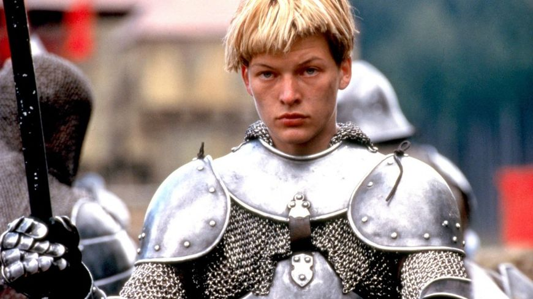
Jeanne d’Arc Jeanne d’Arc - pureté, douceur, bonté héroïque, Jeanne d’Arc est l’héroïne française du temps de la guerre de Cent Ans. Cette jeune paysanne a pu se mettre à la tête des troupes françaises et remporter des victoires sur les envahisseurs anglais; mais elle a été trahie, vendue aux Anglais, jugée comme hérétique et sorcière et brûlée vive à Rouen le 29 mai 1431. Tout étonne dans l’histoire de Jeanne d’Arc. A 17 ans elle entre dans l’histoire de la France. En deux ans cette jeune fille de la campagne qui, selon la chronique ne sait ni lire, ni écrire, a su se faire écouter des rois et des soldats, commander une armée, gagner des batailles. Elle est morte, mais sa figure grandit au coeur des Français. Au XVe s., l’Eglise décide de la reconnaître comme sainte.
Personalité historique - Napoléon Bonaparte
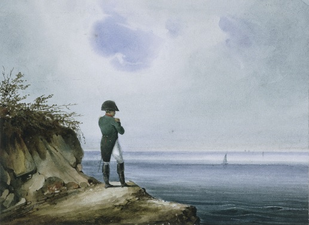
Lire plus dans l'article
Napoléon Bonaparte est un
militaire et homme d'État français, premier empereur des Français du 18 mai 1804 au 6
avril 1814. Le Code civil, élaboré sous sa surveillance personnelle, confirme l’abolition des
privilèges, affirme le droit de propriété, renforce l’autorité du père au sein de la famille,
celle du patron sur l’ouvrier. Il fait de la femme mariée une éternelle mineure. En cas de
conflit, le patron est cru sur sa simple affirmation, l’ouvrier sur preuve écrite. Les ouvriers
sont privés du droit d’association et de grève, ils sont traités en suspects par le Code pénal.
Napoléon a conservé, en partie, l’héritage révolutionnaire. Pour former une élite docile et
efficace capable de diriger la France, Bonaparte a remplacé en 1802 les écoles centrales par les
lycées. Puis il a fondé, en 1806, l’université impériale et lui a accordé le monopole de
l’enseignement. Le Concordat de 1801 a mis le clergé sous le contrôle du gouvernement, a redonné
un statut officiel à l’Eglise mais n’a pas refait du catholicisme une religion d’Etat.
Napoléon
a consolidé l’unité du territoire et de la nation. Pour gérer la France, il crée une
administration hiérarchisée de fonctionnaires nommés, payés et contrôlés par le pouvoir central.
À la tête du département (circonscription fondamentale) se trouve le préfet qui ne dépend que du
gouvernement dont il est l’oeil dans la province. Au-dessous du préfet, chargé de faire
appliquer partout les mêmes lois, il y a un escalier d’une administration hiérarchisée où tout
est rattaché à Paris. Cette structure centralisée a duré jusqu’au mois de mars 1982. Ainsi les
grands ensembles de lois du Consulat et de l’Empire ont pour longtemps organisé les changements
essentiels hérités des dix années révolutionnaires.
Une personnalité du théâtre - Molière
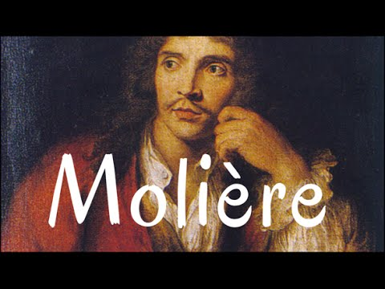
Molière, de son véritable nom Jean-Baptiste Poquelin, est une des personnalités les plus
marquantes du théâtre français. Il prête son pseudonyme au surnom de la langue française dans le
monde entier : la « langue de Molière ».
A la fois dramaturge et comédien, Molière était la référence théâtrale du XVIIe siècle . A
l’époque, Molière faisait partie de la troupe officielle du Roi Louis XIV . Molière était
d’ailleurs un des premiers artistes à utiliser le français tel qu’on le connaît aujourd’hui : il
reste donc une figure majeure du maniement de la linguistique française! Son approche du lexique
et du vocabulaire français était ce qui faisait la force de ses pièces. En effet, Molière aimait
jouer avec la langue française, les jeux de mots et les figures de style .
J’apprécie la comédie « L’avare » où il s'agit d'une comédie de caractère dont le personnage
principal, Harpagon, est caractérisé par son avarice caricaturale. Harpagon tente de marier sa
fille de force, tout en protégeant obstinément une cassette pleine d'or.
En fin, grâce à sa maîtrise de la terminologie de notre langue officielle, Molière a contribué à
promouvoir le français au-delà des frontières de l’Hexagone. Bien après le dramaturge français,
la langue française a connu de nombreuses réformes orthographiques.
Le théâtre tragique contemporain : Rhinocéros, d'Eugène Ionesco
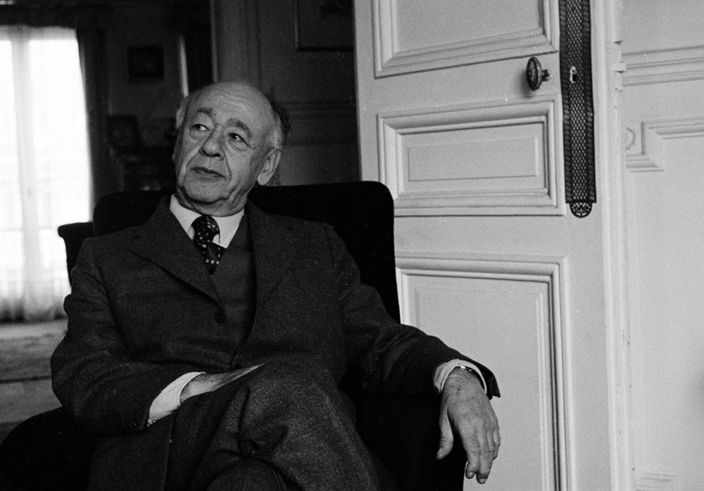
Eugène Ionesco (1909-1994) est considéré comme l’un des plus grands dramaturges français. D’origine roumaine, il prend la nationalité française en 1950. Chef de file de ce que l’on a appelé le « nouveau théâtre » ou théâtre de l’absurde, avec Samuel Beckett, il a écrit de nombreuses pièces à succès, parmi lesquelles nous trouvons La Cantatrice chauve, Les Chaises, La Leçon, Le Roi se meurt et Rhinocéros. Avec Rhinocéros, Ionesco a le désir de dénoncer toutes les formes de totalitarisme. La pièce paraît en 1957 et est représentée pour la première fois à Düsseldorf, en 1959, où le public allemand acclame cette critique du nazisme.La pièce est composée de trois actes. Les thèmes • Dénonciation des totalitarismes et des dictatures (nazisme, fascisme, stalinisme, ...) Face à ce qu’il considère comme une menace et un cauchemar obsédants, Ionesco défend les valeurs auxquelles il est attaché : l’amitié, la liberté, les Droits de l’homme, la démocratie. Il s’attaque aux valeurs du totalitarisme : la glorification du chef, l’autorité, la force. (La pièce a d'ailleurs été interdite en URSS et en Roumanie soviétique). • Satire des comportements humains face à la montée d’une idéologie Ionesco fustige les phénomènes de groupe, dénonce l’instinct grégaire : il prouve qu’au départ, le groupe humain est étonné, puis effrayé, avant de se laisser entraîner, justifiant l’injustifiable (les massacres, les exterminations, les pogroms, …). Ceux qui résistent sont très peu nombreux. • Dénonciation de l’uniformisation d’une société Tout le monde finit par se ressembler et par dire la même chose. Lire plus
Charles Aznavour - chanteur
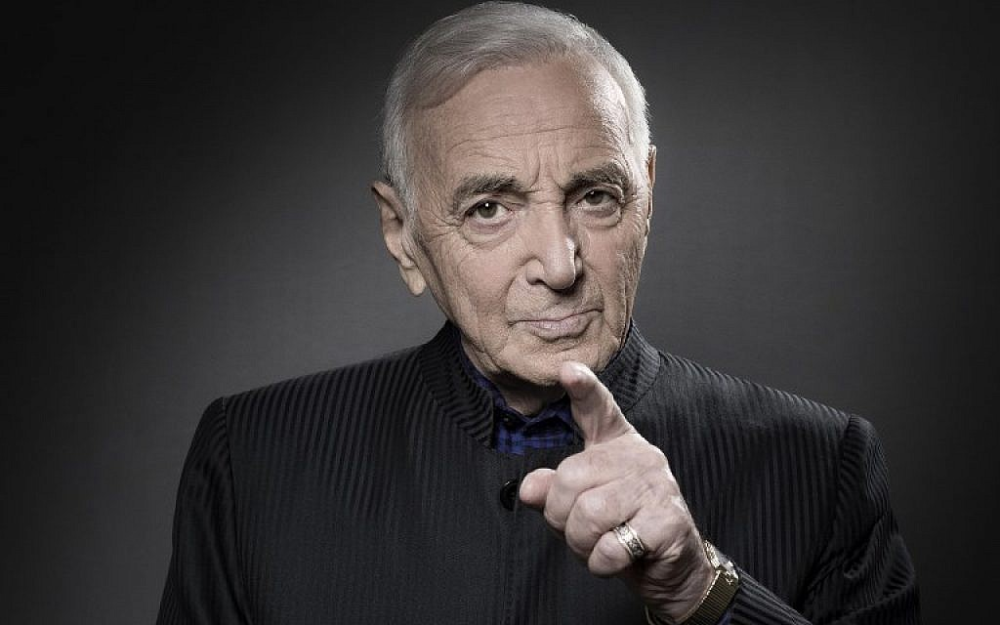
La carrière de Charles Aznavour a de quoi faire tourner la tête : avec plus de 1200 titres à son actif, le chanteur français d’origine arménienne reste une icône de la chanson hexagonale. Aznavour parle souvent de notre belle capitale Paris, ce qui plait beaucoup aux étrangers ! Son premier succès, Je m’voyais déjà, parle d’ailleurs du rêve parisien, puisqu’il évoque un homme qui souhaite trouver le succès dans la Ville Lumière. Charles Aznavour tente également de contextualiser ses chansons en abordant l’architecture française, en donnant des noms de rues parisiennes et en évoquant notre culture si particulière. Pour le chanteur, il est également impératif de prendre en compte les valeurs de la république française ! En effet, Aznavour évoque l’égalité entre les hommes (notamment dans Comme ils disent) afin que chacun et chacune puisse se retrouver dans ses paroles. Si vous souhaitez apprendre le français, les chansons d’Aznavour vous permettront de comprendre la diversité et les valeurs du pays à l’emblème du coq !
Eugen Doga - un créateur universel
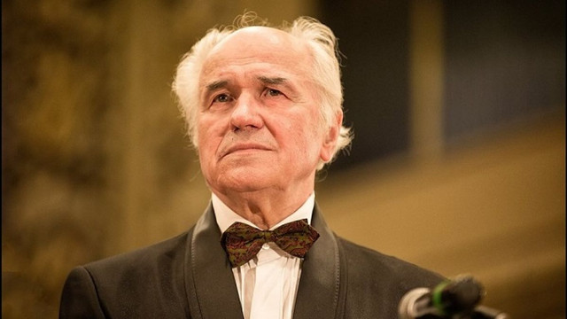
Le compositeur Eugen Doga qui a écrit de la musique pour des films et des spectacles, de nombreuses symphonies et cantates, cinq quatuors à cordes, des chansons et des romances immortelles, est incontestablement une cime de la culture moldave. Le domaine dans lequel il s’est aµrmé et qui lui a apporté la renommée internationale est l’art de la composition.Il a écrit la musique pour plus de 200 films produits en Moldova, en Russie, en Roumanie et dans d’autres pays du monde. Sa musique pour les films Lăutarii, O șatră urcă la cer, Ana Pavlova, Gingașa și tandra mea fiară, Patul lui Procust ainsi que pour le ballet Luceafărul sont des pièces immortelles du patrimoine culturel national. En écoutant sa musique, on voyage à travers l’univers, on a l’impression d’admirer de splendides paysages, de se déplacer dans d’autres dimensions spatiales et temporelles. Or, on ne peut écouter sa pièce Pârâiaşul sans „entendre” le murmure d’un ruisseau, ni la superbe chanson Codrii Moldovei sans se „retrouver” au milieu des forêts sé- culaires moldaves. Sa chanson Oraşul meu cel alb est devenue l’hymne de la capitale moldave. Des patineurs de divers pays du monde ont gagné des médailles d’or sous les airs de la célèbre valse pour le film Gingaşa şi tandra mea fiară . L’an 2007 a été décrété en République Moldova Année Eugen Doga, en signe de reconnaissance pour la contribution précieuse du compositeur au développement de la culture et de la musique moldave. l a été décoré de l’Ordre de la République de Moldova (1997), de l’Ordre L’étoile de la Roumanie, de la médaille Mihai Eminescu et de la médaille d’or L’homme du XXe siècle.
Un génie de la peinture - Eugène Delacroix
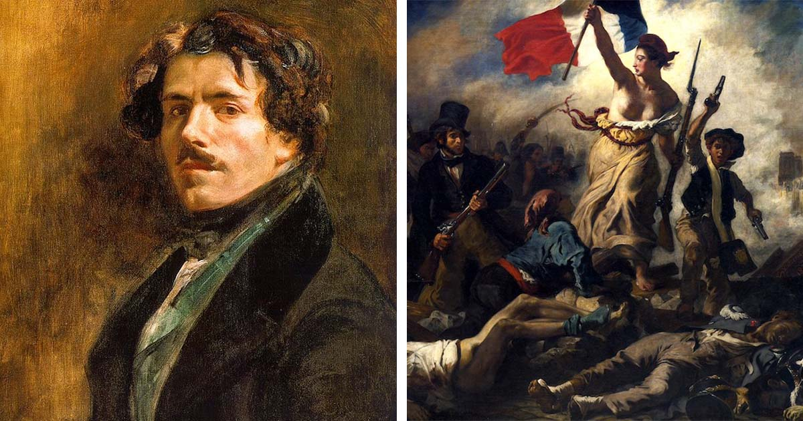
Eugène Delacroix (1798- 1865) est un autre génie de la peinture française. Il exposa au salon de 1822 son Dante et Virgile qui rompait scandaleusement avec les traditions académiques. De caractère plutôt romantique, sa technique picturale était tout à fait individuelle. Son œuvre, diverse et riche, constitue un ensemble harmonieux, éclatant et superbe, plein de feu et de génie. Delacroix fut de sa vie nommé commandeur de la Légion d’honneur. Il eut le mérite d’être agité par les fièvres de La Liberté guidant le peuple de son époque et d’en représenter l’idéal tourmenté avec une poésie, une force et une intensité autant singulière qu’admirable.
Vive la liberté
En juillet 1830, le roi Charles X (successeur de Louis XVIII) fait adopter des ordonnances qui suppriment notamment la liberté de la presse pour freiner la montée de l’opposition. Le peuple de Paris monte sur les barricades pour protester contre ces ordonnances et la protestation se transforme en véritable révolution. Les émeutes des 27, 28, et 29 juillet que l’on appelle “Les trois Glorieuses”, vont amener le roi Charles X à abdiquer et à partir pour l’exil. Il est remplacé par Louis Philippe. La violente répression de cette insurrection provoquera de vives réactions notamment chez les intellectuels et les artistes, Eugène Delacroix et Victor Hugo en font partie. Il y a 4000 barricades dans Paris à ce moment là, et c’est la première fois que Delacroix peint ce qu’il a vu. Alors il peint une image dont la plupart des éléments sont réels, observés : des cadavres livides dépouillés de leurs vêtements et de leurs armes, des ongles noirs, du sang, etc. Ainsi, la “Liberté” est une allégorie, c’est-à-dire une idée, elle est incarnée physiquement par une femme du peuple : grande, les joues rouges, les bras puissants…
Le peintre Gustave Courbet

Gustave Courbet (1819-1877) est le peintre qui remet tout en cause. Le premier, il a proclamé dans la peinture la primauté de la matière, l’existence indépendante de l’objet par rapport à l’artiste, la nécessité absolue de peindre d’après la nature, ce que l’œil a vu et rien que ce qu’il a pu voir. Par là, il porte la responsabilité de toute la peinture française qui lui succéda et qui résume les traits de base de l’impressionnisme. L’apparition du phénomène Courbet dans la peinture coïncide avec l’éveil de l’ouvrier, ce géant de son siècle. C’est de là que vient le matérialisme de Courbet. Les Lutteurs, le Désespéré, L’Homme du chien noir, Un enterrement à Ornans, L’Homme blessé etc. ne représentent qu’une modeste partie de ses œuvres. Les Casseurs de pierre.
L'impressionniste Edouard Manet
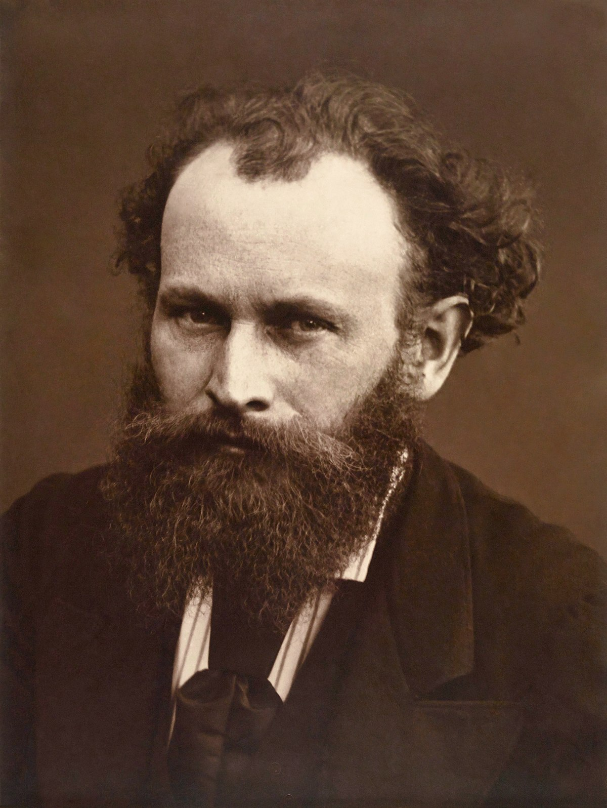
Un autre représentant du courant impressionniste est Edouard Manet (1832-1883). On regarde ses toiles avec une sensation d’unité et de force. La première toile a été le Buveur d’absinthe qui n’est pas encore très réussie. Le peintre se cherche encore. Ensuite viennent le Chanteur espagnol et l’Enfant à l’épée. Ces peintures sont fermes et solides, très délicates d’ailleurs, ne blessant en rien la vue faible de la foule. Au Salon des Refusés en 1863, Manet trouva des défenseurs, même des admirateurs, avec son Déjeuner sur l’herbe. Ce qu’il faut voir dans le tableau, ce n’est pas un déjeuner sur l’herbe, c’est le paysage entier avec ses vigueurs et ses finesses, avec ses premiers plans si larges et solides, ses fonds d’une délicatesse si légère.
Louis Pasteur - un homme de la science
Chimiste et biologiste français né à Dole, fondateur de la microbiologie. Il a effectué de
remarquables travaux sur la cristallographie, les
fermentations et la maladie des vers à soie. Après une étude sur les vins,
Louis Pasteur a réalisé une méthode de conservation des aliments –
la pasteurisation.
Il a montré la nature microbienne du charbon*, a découvert le vibrion
septique, le staphylocoque, a réalisé un vaccin contre le charbon et après
beaucoup de difficultés – le vaccin contre la rage qui lui a valu la gloire
(1885). Membre de l’Académie Française (1881).
Par ses travaux riches et variés, Louis Pasteur a montré que le progrès
scientifique doit profiter à l’homme en lui procurant une vie meilleure.
Ses découvertes en microbiologie ont profité à l’ensemble des citoyens
dans les domaines de l’hygiène de l’alimentation et de la santé. Elles
ont été très bénéfiques à l’économie.
L’Institut Pasteur
Institut privé de recherches biologiques et médicales (microbiologie, génétique, immunologie, allergologie et épidémiologie). Il a été fondé en 1888 et poursuit l’œuvre de Louis Pasteur. Cet établissement prépare et vend des vaccins et sérums pour la prévention et le traitement des maladies. Situé à Paris, il compte de nombreuses filiales en France et à l’étranger.L'impressionniste Edouard Manet
Un autre représentant du courant impressionniste est Edouard Manet (1832-1883). On regarde ses toiles avec une sensation d’unité et de force. La première toile a été le Buveur d’absinthe qui n’est pas encore très réussie. Le peintre se cherche encore. Ensuite viennent le Chanteur espagnol et l’Enfant à l’épée. Ces peintures sont fermes et solides, très délicates d’ailleurs, ne blessant en rien la vue faible de la foule. Au Salon des Refusés en 1863, Manet trouva des défenseurs, même des admirateurs, avec son Déjeuner sur l’herbe. Ce qu’il faut voir dans le tableau, ce n’est pas un déjeuner sur l’herbe, c’est le paysage entier avec ses vigueurs et ses finesses, avec ses premiers plans si larges et solides, ses fonds d’une délicatesse si légère.
Auguste Rodin - le plus grand sculpteur
Auguste Rodin (1840-1917) est considéré comme l’un des pères de la
sculpture moderne, le meilleur sculpteur du XIXe siècle. Il a réalisé au
cours de sa carrière environ 7000 sculptures, 10.000 dessins et 10.000
photographies.
À l’âge de 14 ans, ses parents l’ont inscrit à l’École Spéciale de dessin
et de mathématiques. Ici, Rodin a découvert sa passion pour la sculpture
et son talent a été vite remarqué. Il passait beaucoup de temps à dessiner
sans relâche au musée du Louvre où il étudiait les maîtres antiques grecs
et romains.
Trois ans plus tard, Auguste Rodin a essayé d’entrer à l’École des
Beaux-Arts de Paris. Mais il a échoué trois fois de suite au concours. Afin
de pouvoir vivre, il travaillait dans des ateliers des sculpteurs et des dé-
corateurs. À 20 ans, Rodin a réalisé sa première sculpture: un buste de
son père inspiré des portraits des dirigeants romains pendant l’Antiquité.
En 1876, Rodin a fait plusieurs voyages en Italie pour découvrir les artistes de la Renaissance
italienne dans les villes de Florence, Turin,Venise et
Rome. Il a été particulièrement inspiré par l’œuvre du sculpteur et peintre
Michel-Ange et de retour à Paris, Auguste Rodin a créé sa première grande
œuvre, L’Âge d’airain. En 1880, il a reçu une commande de l’État français
pour le futur musée des Arts Décoratifs. Ce projet deviendra La Porte de
l’Enfer: une porte décorative inspirée de La Divine Comédie du poète italien médiéval Dante
Alighieri. Le sculpteur imagine des figures pour l’orner.
Deux d’entre elles, agrandies deviendront célèbres: Le Baiser et Le Penseur
qu’il décrit ainsi: «Il ne pense pas seulement avec son cerveau, ses narines
dilatées et ses lèvres serrées, mais avec chaque muscle de ses bras, de son
dos et de ses jambes, avec son point crispé et ses orteils contractés». C’est
un monument dédié à la pensée ou à l’esprit, c’est pourquoi une version
agrandie en bronze, a été acquise par souscription par les Parisiens et installée en 1906 devant
la façade du Panthéon.
Le sujet principal des œuvres de Rodin a été le corps humain. Dans son
atelier, il saisissait les mouvements naturels de ses modèles. Il cherchait
à rendre les corps expressifs, comme s’ils étaient vivants! Rodin a sculpté
ses figures dans di±érents matériaux: argile, plâtre, bronze et marbre.
En 1908, Rodin s’est installé à l’Hôtel Biron, un ancien hôtel particulier
au cœur de Paris où il recevait principalement des journalistes, des marchands, et des
collectionneurs. À la fin de sa vie, Rodin a fait don à l’État
français de toutes ses collections et de ce beau bâtiment qui abrite actuellement le musée
Rodin.
Jacques Cartier - un voyageur français célèbre, découvreur du Canada
Jacques Cartier (1491 – 1557), est un navigateur et explorateur français illustre. Auteur de cartes qui ont permis l’apparition du golfe du Saint-Laurent sur les représentations du globe, Cartier est le premier Européen à décrire et nommer ces eaux, leurs rives et leurs habitants, et le territoire visité qu’il nomme Canada. Il a fait des voyages au Brésil et en TerreNeuve plusieurs fois avant que le roi François Ier ne le charge d’une mission : découvrir un passage vers les Indes par le nord-ouest de l’Amérique et conquérir des territoires au nom de la France. Le premier voyage, en 1534, est une grande expédition durant laquelle Cartier découvre l’île du Prince Edouard et la Gaspésie, qu’il attribue à la France. Jacques Cartier est l’un de ces explorateurs européens partis d’Espagne, du Portugal, d’Angleterre et de France au XVIe et au XVIIe siècles, principalement pour découvrir un passage vers la Chine mythique. Cartier est devenu l’un des « découvreurs » d’un nouveau monde, immense continent qui barrait le chemin aux navigateurs : les Amériques. En explorateur méticuleux, il a inventorié un vaste territoire s’étendant du golfe du SaintLaurent jusqu’au site d’Hochelaga, devenu Montréal, et il a attribué ce territoire au roi de France. Il n’est toutefois pas parvenu à fonder une colonie durable. Les premiers historiens du Canada français l’ont proclamé découvreur du Canada au XIXe siècle
Henri Stendhal
Henri Stendhal est un auteur français qui a marqué la littérature du XIXe siècle. Son roman Le Rouge et le Noir a été publié à Paris le 13novembre 1830 dans lequel il dresse un portrait de la société de son temps. À partir d’un fait divers, Stendhal écrit son plus grand chef-d’œuvre où il imagine et met en scène le personnage de Julien Sorel, prêt à tout pour se faire une place respectable dans la société française. C’est un roman réaliste et psychologique qui décrit les passions et les ambitions du jeune Sorel dans une petite ville de Verrières, puis à Besançon. Julien hésite longtemps entre la carrière militaire et cléricale, entre sa passion pour Napoléon et son attrait pour la religion, mais il ne dispose pas d’assez d’argent pour éviter un emploi. Stendhal avait tout d’abord appelé son roman Julien, puis il a changé pour ce titre plus énigmatique: Le Rouge et le Noir. Le romancier n’a jamais donné la signification exacte du Rouge et du Noir, mais l’interprétation la plus commune suggère que le rouge symbolise l’armée et le noir le clergé. D’autres interprètent le rouge comme la couleur de la passion et le noir celle de la mort
Honoré de Balzac
Romancier français (1799-1850) auteur d'une gigantesque épopée romanesque, la Comédie humaine.
Honoré de Balzac, né Honoré Balzac à Tours le 20 mai 1799 et mort à Paris le 18 août 1850 (à 51
ans), est un écrivain français. Romancier, dramaturge, critique littéraire, critique d'art,
essayiste, journaliste et imprimeur, il a laissé l'une des plus imposantes œuvres romanesques de
la littérature française.
Il est un maître du roman français, dont il a abordé plusieurs genres, du roman philosophique
avec Le Chef-d'œuvre inconnu au roman fantastique avec La Peau de chagrin ou encore au roman
poétique avec Le Lys dans la vallée. Il a surtout excellé dans la veine du réalisme, avec
notamment "Le Père Goriot" et "Eugénie Grandet", mais il s'agit d'un réalisme visionnaire, que
transcende la puissance de son imagination créatrice.
Comme il l'explique dans son avant-propos à "La Comédie humaine", il a pour projet d'identifier
les « espèces sociales » de son époque, tout comme Buffon avait identifié les espèces
zoologiques. Ayant découvert par ses lectures de Walter Scott que le roman pouvait atteindre à
une « valeur philosophique », il veut explorer les différentes classes sociales et les individus
qui les composent, afin d' « écrire l'histoire oubliée par tant d'historiens, celle des mœurs »
et « faire concurrence à l'état civil ».
En plus de son talent pour créer des personnages, Balzac est également reconnu pour son style
réaliste et minutieux. Il accorde une grande importance aux détails et cherche toujours à rendre
compte de la vérité sociale et psychologique. Il puise souvent dans ses propres expériences et
observations pour nourrir ses intrigues et donner de la profondeur à ses histoires.
Si Honoré de Balzac est aujourd'hui considéré comme un maître du roman français, c'est en grande
partie grâce à son apport à la littérature réaliste. Son œuvre a influencé de nombreux auteurs,
tels que Charles Dickens, Marcel Proust ou encore Fiodor Dostoïevski. Il a également marqué
plusieurs courants littéraires, notamment le naturalisme et le symbolisme.
Zinédine Zidane - le meilleure footbaleur de la France
Envergure: 1,85 mètre; 80 kilos.
Atouts: contrôle, jeu de passes précis, coups bien placés, rapidité d’exécution. Origine: Il est
né le 23 juin 1972, à la Castellane, un quartier pauvre au nord de Marseille. Il y est resté
jusqu’à son intégration (à 13 ans et demi) au centre de formation de l’AS Cannes.
Famille: Ses parents sont des émigrés kabyles. Son père Smaïl est magasinier, sa mère s’appelle
Malika, il a trois frères et une sœur… Il s’est marié avec Véronique en 1994, ils ont trois
enfants (Enzo, Luca et Théo.)
Prénom: Son premier, Yazid, continue à être utilisé par ses proches. Son second, Zinédine, est
devenu une identité planétaire.
Ballon: „Il est certainement le meilleur joueur au monde par sa capacité à éliminer les
adversaires, à passer le ballon et à accélérer le jeu.” „France-Soir”, 4.07.2006
Buts: 65 en 380 matchs de championnat; 12 en 68 rencontres de Coupes d’Europe. 19 buts en 73
sélections avec l’équipe de France.
Palmarès: Meilleurs joueur du championnat de France et d’Italie Ballon d’or 1998 Champion du
monde 1998 Championnat d’Europe des Nations 2000 Vainqueur Ligue des champions 2002 Meilleur
joueur de la Coupe du Monde 2006…
Argent: Plus de 15 millions d’euros de revenus. En 2001 le Real Madrid à déboursé près de 76
millions d’euros pour s’offrir ses services. C’est l’équivalent d’un Airbus 321.
Symbole: Zinédine Zidane est devenu le portedrapeau de l’intégration réussie, l’artisan du
succès d’une équipe métissée „black – blanc – beur”.
Qualités: Discret, silencieux, il s’est forgé l’image d’un homme simple, d’un fi ls attentionné,
d’un bon père de famille et d’un citoyen du monde (il est ambassadeur de l’ONU pour la lutte
contre la pauvreté).
Antoine Griezmann - un autre footbaleur important de la France
Antoine Griezmann, né en 1991 a Macon, en
France, est un footballeur professionnel frangais. II
joue comme attaquant et est devenu connu pour
ses compétences techniques, son intelligence dans
le jeu et sa capacité a marquer des buts importants.
Griezmann a commencé sa carriére au niveau
des clubs en France, jouant pour la Real Sociedad.
Ses performances impressionnantes l'ont attiré
I'attention des grands clubs et en 2014, il a signé
avec I'Atletico Madrid, ot il a consolidé son statut
de joueur de haut niveau.
A l'Atletico Madrid, Griezmann est devenu l'un
des joueurs les plus importants de I'équipe. Il a aidé
a remporter plusieurs titres, dont I'UEFA Europa.
League en 2018. Il m'a impressionné en montrant
une capacité impressionnante a jouer dans
différents roles offensifs.
Il m'impressionne par le style de jeu d'Antoine
Griezmann, avec sa vitesse, sa mobilité et sa
capacité a finir devant le but. Il est connu pour sa
technique fine, son dribble agile et sa capacité a
créer et distribuer le ballon.
En conclusion, je peux dire qu'Antoine
Griezmann est l'un des footballeurs les plus
appréciés de sa génération et continue
d'impressionner par ses performances en club et au
niveau international. Par son talent et ses apports
au football, il est devenu un nom important du
football francais et mondial.
Les monuments hystoriques
La cathédrale Notre-Dame de Paris - un monument architectural ancien
La cathédrale Notre-Dame de Paris, chef d’œuvre de l’architecture gothique, est le monument le plus visité de France. Située dans le centre historique de Paris, à l’extrémité de l’île de la Cité, sa construction débute au Moyen Âge. Les travaux ont commencé aux XIIIe et se sont terminés au XVe siècle. Très endommagée pendant la Révolution française, la cathédrale a fait l’objet d’une restauration au XIXe siècle dirigée par l’architecte Viollet-le-Duc. Les nombreux visiteurs admirent les vitraux et rosaces, les tours, la flèche et les gargouilles. Ils peuvent également découvrir le Trésor de Notre-Dame et tenter l’ascension des tours pour profiter d’une vue panoramique de Paris. En 2013, Notre-Dame célèbre son 850e anniversaire. À l’occasion de ce jubilé, de nombreuses manifestations sont organisées et la cathédrale renouvelle son patrimoine campanaire avec l’arrivée de huit nouvelles cloches et d’un nouveau bourdon. Les distances routières de France se calculent à partir du point 0, situé sur le parvis. Ce monument architectural apparaait dans plusieurs films français, ce que la détermine être un symbole de la culture et de la religion de la France.
Le viaduc de Millau - un monument architectural modèrne
Le viaduc de Millau, que certains n’hésitent pas à appeler le Pont du Gard du XXIe siècle, est
un record mondial de
hauteur et un ouvrage de grande technicité.
Ce morceau d’autoroute enjambe la vallée du Tarn, une
rivière du sud du pays longue de 375 km. Il est situé dans
le département de l’Aveyron et assure la circulation entre
Paris et Béziers.
Historique. Les environs de la ville de Millau étaient cé-
lèbres par leurs embouteillages interminables en été. Il
fallait trouver une solution pour rendre le trajet des vacanciers vers la mer Méditerrannée plus
agréable!
En 1987, des ingénieurs imaginent un viaduc à
Millau sur le tracé de l’autoroute reliant Clermont-Ferrand à Béziers. Les études techniques
(tracé, solidité...) et fi nancières ont duré 13 ans.
Plusieurs projets ont été proposés. Celui de l’ingénieur français Michel Virlogeux, dessiné par
l’architecte anglais Norman Foster a été retenu. Les travaux ont commencé le 14 décembre
2001 et ont duré 3 ans.
Le 14 décembre, 2004, le pont a été inauguré
par le Président de la République Jacques Chirac
et a été ouvert à la circulation le 17 décembre
2004. Il a permis de désengorger le trafi c routier,
ralenti tous les ans en période estivale, quand on
était obligé de traverser la ville de Millau.
C’est le plus haut pont haubanné du monde. Sa
longueur est de 2 460 mètres. Il pèse 36 000
tonnes soit plus de 4 fois la Tour Eiff el. Le tablier
de 32 m de large accueille une autoroute de 2 fois
2 voies et deux bandes d’arrêt d’urgence dans les
deux directions.
Les travaux ont coûté 400 millions d’euros. Il traverse la vallée du Tarn à près de 270 m de
hauteur. Il est maintenu par 7 piles prolongées chacune par un pylône de 87 m. La hauteur
maximale
de la pile P2 est de 343 m, soit 20 m de plus que la
tour Eiff el. Outre sa hauteur, on peut s’étonner du
fait qu’il ne soit pas rectiligne.
En eff et, son rayon de courbure de 20 km permet aux véhicules d’avoir une trajectoire plus
précise qu’en ligne droite et de donner l’illusion
d’un viaduc interminable. 12 000 véhicules empruntent en moyenne chaque jour ses voies dans
les deux directions. La traversée du viaduc est
payante: 9,10 euros en été et 7,30 euros hors été.
En moyenne, près de 13 000 véhicules traversent
chaque jour ce viaduc. L’endroit est devenu un
site touristique très fréquenté En 2018, avec 1,3
millions de visiteurs enregistrés, «le pont du Gard
du XXIe siècle» était le 18e site touristique fran-
çais le plus visité
Le Louvre - moument architectural
Le musée du Louvre est l'un des plus grands musées du monde et le plus grand musée de Paris par sa surface de 210 000 m2 dont 60 600 consacrés aux expositions. Situé au cœur de la ville, à la rive droite de la Seine, dans le 1er arrondissement, le bâtiment est un ancien palais royal, le palais du Louvre. La statue équestre de Louis XIV constitue le point de départ de l'axe historique, mais le palais n'est pas aligné sur cet axe. Le Louvre possède une longue histoire de conservation artistique et historique de la France, depuis les rois capétiens jusqu'à nos jours. Le Louvre a été inauguré la 10 août 1793 par un décret de la Grande Révolution Francaise. Il est divisé en 6 départements: antiquité égyptienne, antiquité orientale, antiquité grecque et romaine, peinture, dussin, sculpture du Moyen Age, objets d'art. Ici est exposée la Joconde de Leonard de Vinci. La Joconde est réalisé dans les années 1503-1506, représentant une femme à l'expression pensive et au sourire à peine esquissé. Elle est considérée comme l'œuvre la plus célèbre de l'histoire de la peinture. Peu d'autres tableaux ont été autant discutés. Le tableau est actuellement exposé au Musée du Louvre à Paris, étant la principale attraction pour tout visiteur. À mon avis, le musée Louvre est un musée important où les gens peuvent découvrir par quelques oeuvres la richesse de l'histoire française.
Le Musée du Quai Branly-Jacques Chirac - monument moderne
Situé en bord de Seine, au pied de la tour Eiffel, le musée du quai Branly - Jacques Chirac
s'attache à donner la pleine mesure de l'importance des Arts et Civilisations d'Afrique, d'Asie,
d'Océanie et des Amériques, à la croisée d'influences culturelles, religieuses et historiques
multiples. Dans ce lieu de dialogue scientifique et artistique, expositions, spectacles,
conférences, ateliers, projections rythment la programmation culturelle.
Cet immense bâtiment signé Jean Nouvel, avec sa façade de verdure et son jardin peuplé de pièces
architecturales, est né en 2006 sous l’impulsion de Jacques Chirac. Dédié aux arts d’Afrique,
d’Asie, d’Océanie et des Amériques, il abrite les anciennes collections d’ethnologie du musée de
l’Homme et du musée national des Arts d’Afrique et d’Océanie de la Porte Dorée. À l'intérieur,
le parcours est jalonné de statues maliennes, masques du Gabon, estampes japonaises, et autres
objets de la vie quotidienne. Une vraie invitation au voyage.
Établissement public placé sous la double tutelle du ministère de la Culture et de la
Communication et du ministère de l'Enseignement supérieur et de la Recherche, le musée du quai
Branly - Jacques Chirac est à la fois un musée et un centre d'enseignement et de recherche: un
forum ouvert sur le monde avec des propositions artistiques, culturelles et scientifiques, de
niveaux de lecture et d'angle d'approches différents.
Des colloques internationaux aux rendez-vous plus intimes du salon de lecture Jacques Kerchache,
des conférences de l'Université populaire du quai Branly aux débats avec des créateurs
contemporains, la nature et l'histoire des collections du musée nourrissent des questionnements
permanents abordés quotidiennement à différents niveaux.
De par la nature même de ses collections, le musée du quai Branly - Jacques Chirac a une
vocation internationale et mène une politique active de coopération avec les pays d'origine de
ses collections. Le musée multiplie les échanges sous forme de coopérations scientifiques,
culturelles et techniques.
Le musée dispose également d'une médiathèque spécialisée dans les domaines de l'ethnologie et de
l'histoire de l'art extra-européen.
Le château de Versailles
Symbole de la gloire de France, Versailles est un complexe de châteaux et palais, vieille
résidence des rois. Au château de Versailles se trouvent la Grande Galerie des Glaces, un parc
avec de beaux jardins et bassins, le grand canal, l’orangerie, le hameau de la Reine et d’autres
éléments. La Galerie des Glaces est exceptionnelle. Elle éblouit par son luxe. Ici se trouve le
trône d’argent du roi. De nos jours, le châ- teau de Versailles est l’un des monuments les plus
visités de France pour son archi- tecture, pour ses jardins fantastiques, mais aussi pour son
histoire.
Depuis 1904, le château a servi de décor à près de 200 films. Parmi les premiers, plusieurs
films documentaires et reconstitutions de scènes d’époque sont réalisés par la maison Pathé.
Depuis, nombreux sont les grands cinéastes à être passé par Versailles : Alain Resnais, Jacques
Demy, Jean Yanne, Milos Forman, Sofia Coppola ou encore Woody Allen. Le plus emblématique
d’entre eux reste Si Versailles m’était conté, tourné en 1953 par Sacha Guitry, qui contribue à
faire renaitre la notoriété du château, victime d’une baisse de popularité après un demi siècle
de guerres.
J'admire ce château, car il est classé depuis 1979 au patrimoine mondial de l'humanité, le
château de Versailles
constitue l'une des plus belles réalisations de l'art français au XVIIe siècle.
Le musée d’Orsay
Situé au cœur de Paris, le long de la Seine, face au jardin des Tuileries, le musée d’Orsay a pris place dans l’ancienne gare d’Orsay, un édifice construit pour l’exposition universelle de 1900. Ainsi le bâtiment est, en quelque sorte, la première «œuvre» des collections du musée d’Orsay qui présente l’art des quelques décennies. Le musée d’Orsay est l’un des plus récents et des plus beaux de Paris. Avec sa grande horloge et les noms des villes desservies inscrits sur la façade (Orléans, Tours, Bordeaux), il était un véritable palais. Seulement les locomotives électriques pouvaient pénétrer sous sa grande verrière. En 1977 on a décidé de transformer la gare en musée à l’initiative du Président Valéry Giscard d’Estaing. On a préservé les piliers, les poutres en fonte, les coupoles et la verrière, on a prévu un système de climatisation qui servait aussi à minimiser les sons à l’intérieur du futur musée, ainsi qu’un système d’éclairage servant à préserver les œuvres d’art d’une lumière directe. Après six ans de travaux, le 9 décembre 1986, le Président de la République, François Mitterrand, a inauguré le nouveau musée d’Orsay pour montrer, dans toute sa diversité, la création artistique du monde occidental de 1848 à 1914. Il a été constitué de collections nationales provenant essentiellement de trois établissements: le musée du Louvre, le musée du Jeu de Paume et le musée national d’Art moderne. À Orsay, on peut admirer beaucoup de chefsd’œuvre du siècle passé. L’impressionnisme est très bien représenté et en particulier, les tableaux de Claude Monet. Vous pouvez aussi admirer les débuts de l’expressionnisme avec Van Gogh, le réalisme et le naturalisme de Courbet, Millet et Degas, le pointillisme de Signac, les dé- buts du cubisme avec Cézanne, et les couleurs fortes utilisées par Paul Gauguin.
Les médias 📰
La presse écrite en France
• La presse parisienne donne des informations d’intérêt national ou
international. Elle est
plus engagée politiquement que la presse régionale. Elle est également lue en province.
Principaux titres. Plutôt à droite: Le Figaro, Le Parisien, France-Soir. Plutôt à gauche: Le
Monde, Libération. Le Figaro est le plus ancien des journaux parisiens, il a été fondé en 1854.
Il est devenu quotidien en 1866. Après une brève interruption entre 1942 et 1944 pour ne pas
paraître sous contrôle allemand, il acquit progressivement après la Libération une très large
audience en tant que principal quotidien de «droite». Il est complété par un hebdomadaire qui
paraît le samedi Figaro-Magazine et Madame Figaro.
• Les périodiques (hebdomadaires et mensuels) .
Les titres sont nombreux. On retiendra: Les magazines de télévision: Télé 7 jours, Télé Poche,
Télé Star, Télérama. Télérama est un journal hebdomadaire qui existe depuis les années 50 du XXe
siècle Il informe des programmes de Télévision, Radio et Cinéma (= Télérama). Son audience
actuelle déborde très largement le public catholique auquel il s’adressait essentiellement au
départ. En effet, cet hebdomadaire, loin d’être un simple indicateur de programmes de télévision
est devenu un magazine de loisirs culturels très complet où la critique, axée surtout sur la
télévision et le cinéma a une grande part. Il comprend égale ment des articles de fond sur les
faits de société et d’actualité générale.
La presse féminine: Prima, Modes et Travaux,
Marie-Claire, Elle, Nous deux.
Les magazines destinés aux jeunes: Le monde des ados,
Phosphore,
Presse-papiers, 30 millions d’amis.
Les magazines d’opinion: L’Express, Le Nouvel
Observateur,
L’Événement du Jeudi, Le Point.
Les magazines d’information: Paris-Match, Le Figaro
Magazine,
VSD.
• La presse régionale. Elle donne les principales informations d’intérêt général,
mais
comporte de nombreuses pages consacrées aux informations régionales et locales. Le tirage global
de la presse régionale est trois fois supérieur à celui de la presse parisienne. Le plus grand
journal régional est Ouest-France (Bretagne).
Les sites touristiques ✈️
Le Mont Saint-Michel
Le Mont-Saint-Michel représente le plus grand site touristique de Normandie, partie du
patrimoine mondial de l’UNESCO.
Le Mont-Saint-Michel s’élève au cœur d’une baie magnifique. Une fois sur place, la possibilité
de faire d’intéressantes découvertes est toujours offerte aux voyageurs. Il existe un grand
nombre de lieux à visiter et de choses à faire. Bien sûr, l’Abbaye du Mont-Saint-Michel reste
sans nul doute la principale attraction de la commune. Elle témoigne parfaitement de la
maîtrise, ainsi que du savoir-faire de plusieurs générations de maîtres d’œuvre. Mais l’abbaye
du Mont-Saint-Michel n’est pas le seul patrimoine religieux important.
Les Fortifications du
Mont-Saint-Michel offrent la possibilité de faire de belles balades. Les habitants sont très
courtois et savent guider les étrangers. Parmi les autres attractions du Mont-Saint-Michel, on
peut également citer la basilique d’Avranches, la chapelle Saint-Aubert, la porte du Boulevard
et la Grande Rue. Une traversée de la baie à pieds nus vous permettra de vivre une expérience
inoubliable. Cependant la présence d’un guide est fortement recommandée. Veillez également à ne
pas quitter le Mont sans avoir au préalable goûté aux agneaux de prés-salés. Ils sont
remarquablement délicieux.
Disneyland Paris
Le rêve de Walt Disney visant à créer un « parc à thèmes familial où les parents et les enfants
pourraient s’amuser ensemble » s’est concrétisé en Europe lorsque Disneyland Paris a ouvert ses
portes en avril 1992. Depuis, Disneyland Paris a donné la possibilité à plusieurs générations de
vivre des moments inoubliables dans la pure tradition Disney. Disneyland Paris a vu sa
fréquentation en constante progression pour finalement devenir la première destination
touristique européenne.
Que ce soit en famille, entre amis ou avec des proches, une visite à Disneyland® Paris constitue
toujours une expérience à part. En s'attachant à offrir la meilleure expérience possible à ses
visiteurs année après année, la destination est souvent récompensée par des prix et des
classements en Europe et dans le monde. Disneyland Paris continue de repousser les limites de la
narration et de l'innovation pour atteindre l'excellence.
Le 20 juillet 2022 marque l’ouverture héroïque de Marvel Avengers Campus, une étape clé de la
transformation pluriannuelle du Parc Walt Disney Studios. Une cérémonie épique et immersive qui
a plongé les visiteurs dans l’univers des Avengers aux côtés de leurs Super-Héros préférés.
Aujourd’hui, Disneyland Paris est une destination qui invite à un séjour
prolongé avec deux parcs à thèmes, sept hôtels Disney et Village Nature® Paris, un golf de 27
trous, le centre de divertissements Disney Village et un des plus grands espaces dédiés aux
congrès en Europe.
Les parcs les plus grands de la France 🌳
Le Parc national des Calanques
Un des sites le plus remarquables de la côte
du sud de la France, les calanques, sont une sé-
rie de falaises de calcaire, des fjords et des caps
rocheux qui plongent dans la Méditerranée, sur
environ 20 kilomètres des côtes entre Marseille
et Cassis. Les calanques autour de Cassis sont
les plus accessibles aux visiteurs, mais un peu
plus loin à l’ouest, ce sont peut-être les plus
belles en raison de la hauteur de ses falaises, de
la plage et des rochers qui sortent de l’eau. Dans
quelques endroits le long des calanques les falaises atteignent une hauteur de 400 mètres.
Un moyen très étonnant de voir les calanques
est de voyager en bateau de Cassis le long de
la côte. Les billets pour les bateaux sont disponibles dans le port de Cassis – 13 euros pour
visiter trois calanques (45 minutes), 15 euros
pour visiter 5 calanques (65 minutes) et 19 euros pour visiter huit calanques (90 minutes).
L’autre option à explorer est à pied le long du littoral - cette région est vraiment un paradis
pour
les randonneurs.
Le littoral autour des calanques de Marseille
est très populaire auprès des plongeurs. La
grotte sous-marine Cosquer contient certaines
des plus anciennes peintures rupestres dans le
monde - on dit qu’elles rivalisent avec ceux de
Lascaux. Malheureusement l’entrée est de 35
mètres sous l’eau et l’accès est interdit, même si
vous venez équipés de matériel de plongée
Le Parc régional des Volcans d’Auvergne
C’est le plus grand parc naturel régional en France. Ses régions s’étendent sur plus de 100 km
du
nord au sud et comprennent:
a)une vaste région de volcans appelée la Chaîne-des-Puys qui a près de 100 pics et dômes parmi
lesquels le Puy-d e-Dôme. Il est le plus élevé et le plus visité en raison de la facilité
d’accès et la
belle vue depuis le sommet. Six de ces montagnes sont en forme de dôme couverts de forêts et il
y
a aussi partout de nombreux cratères.
b) les Monts du Cantal avec le populaire Puy M ary - un point de vue impressionnant et
populaire, à
une altitude de 1783 mètres qui attire 600 000 visiteurs chaque année.
c) les Monts Dore sont un massif volcanique centré autour
d’une montagne, le Puy de Sancy. Cette région pittoresque est
parsemée de vallées spectaculaires et de lacs pittoresques,
de stations thermales et d’églises romanes. On y pratique le
ski en hiver et la randonnée pédestre en été.
c) une attraction très populaire est Vulcania, un parc
d’attractions où l’éducation sur les volcans est combinée
avec beaucoup d’action et de divertissements. Il a beaucoup
à off rir aux visiteurs toute l’année, avec la randonnée et le
cyclisme, l’équitation et le canoë, la parapente et la pêche - et
bien sûr le ski pendant l’hiver
Sur les boulevards, les rues et les places de Paris 🚦
Le boulevard Haussmann
Le boulevard Haussmann est nommé ainsi en hommage au baron Haussmann et à tout le travail qu’il
a fourni pour métamorphoser Paris. Cependant, il faut savoir que son travail ne s’est
naturellement pas limité au boulevard qui porte son nom : sur près de 20 ans, on a détruit de
nombreux bâtiments pour créer des boulevards, de grandes lignes droites entre la place du Trône
et la place de l’Étoile, ou encore entre la gare de l’Est et l’Observatoire. C’est aussi à cette
époque que l’on aménage les Champs-Élysées – et que ceux-ci prennent la forme qu’on connaît
aujourd’hui.
Bien que le boulevard Haussmann constitue un hommage concret à un personnage
emblématique dans la transformation de Paris, il faut préciser que celui-ci sera terminé après
sa mort. En effet, il faudra environ 20 années de travaux pour qu’en 1926, on achève cet immense
boulevard qui fait partie des plus mythiques de la ville.
Le boulevard Haussmann ne se contente pas de satisfaire les passionnés d’Histoire à Paris : en
toute logique, c’est une rue aujourd’hui encore très appréciée sur la capitale, pour plusieurs
raisons différentes.
En premier lieu, on apprécie énormément de marcher au milieu des belles constructions, toutes
symboliques du Paris haussmannien qu’on connaît très bien. Les personnes qui rêvent d’emménager
dans ce boulevard désirent généralement de beaux appartements dans les grands immeubles, avec de
véritables prestations de caractère à l’intérieur (poutres et parquet massif, belle hauteur sous
plafond, suite parentale, etc.).
Bien évidemment, le boulevard Haussmann n’est pas seulement apprécié des personnes cherchant un
bel appartement à Paris : c’est également un lieu de passage incontournable, pour tous les
touristes comme pour les habitants de la région qui font simplement leur shopping. C’est dans
cette voie que l’on trouve des magasins aussi prestigieux que le Printemps et les Galeries
Lafayette, des adresses mythiques pour les amateurs de mode.
Côté culture, rappelons que le numéro 158 abrite le musée Jaquemart-André. À l’intérieur, on
valorise tout au long de l’année des collections orientées autour des beaux-arts et des arts
décoratifs, avec souvent de très belles expositions temporaires.
Pour conclure, au-delà des commerçants, beaucoup de personnes travaillent autour du boulevard
Haussmann. À titre d’exemple, plusieurs grandes banques ont établi leurs bureaux ici : la
Société générale, Crédit du Nord, Swiss Life, Royal Bank of Scotland ou encore Lazard Frères. On
trouve aussi des établissements à vocation diplomatique, comme l’ambassade du Burkina Faso
La rue du Chat-qui-Pêche
Plus longue que la rue des Degrés avec ses 26 mètres, la rue du Chat-qui-Pêche est en revanche
la plus étroite de Paris (1,80 mètre de largeur). Située dans le 5e arrondissement, elle est au
cœur d’une légende : un chanoine du nom de Dom Perlet se serait livré à l’alchimie dans cette
rue avec l’aide de son chat noir. On dit que ce dernier, si agile, parvenait à attraper les
poissons de la Seine d’un simple et habile coup de patte. Mais le chat est un jour tué par trois
étudiants – persuadés que l’alchimiste et le chat ne sont qu’une seule et même personne – puis
jeté dans le fleuve. Quelques mois plus tard, l’homme réapparaît et son chat aussi.
Cette rue, aujourd'hui fermée par une barrière, aboutissait d'un côté à la rue de la Huchette,
et se dirigeait de l'autre vers la rivière
La Place de la Concorde
Dans le 8e arrondissement de Paris, juste au pied de l’avenue des Champs-Elysées, se trouve une
place très populaire qui réunit des millions de touristes chaque année, la place de la Concorde.
Cette mythique place a été construite entre 1754 et 1763 par l’architecte personnel de Louis XV,
Jacques Angel Gabriel.
S’étendant sur 8,64 hectares, la place de la Concorde est tout simplement la plus grande place
de la capitale française. Elle a surtout marqué le fameux Siècle des Lumières en devenant la
plus grande réalisation de Paris à l’époque.
Situé à deux pas du musée du Louvre, ce lieu est aussi considéré par beaucoup
comme un musée à ciel ouvert, tant il y a de monuments et de statues à admirer sur la place,
d’où l’importance de la visite de la place de la Concorde.
En plus du fameux Obélisque égyptien décoré de hiéroglyphes, on retrouve entre autres la Statue
de Bordeaux, la Statue de Nantes, la Statue de Lyon, la Statue de Marseille, la Statue de Lille,
la Statue de Strasbourg, la Statue de Brest et la Statue de Rouen. Ces 8 statues qui
représentent 8 grandes villes de France ont été placées judicieusement dans le but de former un
octogone autour de la place. D’autres œuvres d’art public s’ajoutent également au décor,
notamment La Renommée chevauchant Pégase ou encore les Chevaux de Marly.
Les visiteurs de la place de la Concorde y viennent aussi pour admirer les deux fontaines
monumentales installées de part et d’autre de l’Obélisque, à savoir la Fontaine des Mers et la
Fontaine des Fleuves.
Pendant que certains s’offrent un déjeuner sur l’herbe au jardin des Tuileries, d’autres passent
leur temps à faire du lèche-vitrine devant les boutiques de luxe des alentours, et plus
particulièrement celles de l’avenue des Champs-Elysées. De Chanel à Dior, en passant par Gucci,
Louis Vuitton ou encore Ralph Lauren, presque toutes les prestigieuses marques de mode sont
présentes, de quoi émerveiller les vacanciers.
Chez Les
Ambassadeurs par exemple, vous aurez la chance de découvrir la gastronomie française.
Enfin si vous voulez terminer votre visite touristique de Paris en beauté, vous pouvez toujours
rejoindre le pont Alexandre III en soirée. L’architecture du pont est certes impressionnante,
mais c’est surtout en dessous que le spectacle se passe. Vous y trouverez l’un des clubs les
plus populaires autour de la place de la Concorde, le Faust. Ce sera pour vous l’occasion de
goûter à la vie nocturne parisienne qui fait tant parler d’elle. Vous pouvez également profiter
d’une simple balade au bord de l’eau lors de votre escapade à Paris.